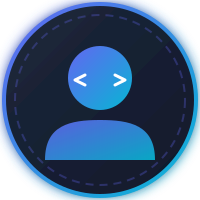

Leonardo Josué Escobar Solís
Ingeniero en Tecnologías de la Información y Comunicación
Ingeniero en TIC en Huawei Latinoamérica, encargado de liderar la gestión integral de plataformas críticas de gestión y garantizando la continuidad operativa desde la infraestructura física hasta la lógica backend. Enfoque profesional combinando administración de sistemas, redes y soporte técnico especializado, con amplia experiencia en la gestión de infraestructuras complejas.
Experiencia Laboral
+2 años en Huawei Technologies Latinoamérica — Gestión integral de plataformas críticas e infraestructura de misión crítica.
ICT Engineer
Liderazgo del ciclo de vida completo de plataformas de gestión críticas, garantizando la continuidad operativa mediante un enfoque integral que abarca desde la infraestructura física hasta la lógica backend.
- Gestión de Sistemas Full-Stack: Responsabilidad en el mantenimiento preventivo y correctivo de sistemas de gestión, asegurando la estabilidad del software, la salud del hardware y la integridad del backend.
- Implementaciones E2E: Ejecución de proyectos técnicos completos, incluyendo la desincorporación de hardware legado, instalación física de gabinetes/equipos y configuración lógica hasta la puesta en producción.
- Resolución de Incidentes (SLA): Gestión y resolución de tiquetes técnicos complejos para clientes finales, con adhesión estricta a los Acuerdos de Nivel de Servicio (SLAs) y garantía de entregas de alta calidad.
- Soporte de TI Interdepartamental: Desempeño como consultoría técnica y liderazgo de soporte para otros departamentos en tareas críticas de TI, integrando soluciones de redes y sistemas.
SmartCare Engineer (Data Analyst)
Coadministración de una plataforma de análisis dentro de un equipo optimizado, supervisando la instalación, integración y el mantenimiento completo de todos los componentes de la infraestructura.
- Gobernanza de Datos: Gestión de gobernanza de datos y análisis de información para el desarrollo de recomendaciones estratégicas, presentando perspectivas accionables directamente a los ejecutivos de los clientes.
- Vinculación Técnico-Comercial: Traducción de datos de rendimiento de la plataforma en información orientada al cliente para mejoras operativas y de marketing.
Engineer Intern
Coadministración de una plataforma de telecomunicaciones virtualizada completa en un entorno de alta disponibilidad (activo-activo) dentro de un equipo de dos personas.
- Alta Disponibilidad: Gestión de tareas administrativas y resolución de problemas mediante sistema de tiquetes, manteniendo un tiempo de actividad del 100% y la confiabilidad total del sistema.
- Gestión de Proyectos: Desarrollo de competencias fundamentales en gestión de proyectos a través del mantenimiento de la plataforma de extremo a extremo y procesos sistemáticos de resolución de incidentes.
Educación
Maestría en Tecnología de la Información
Mención en Administración de Proyectos
Bachillerato en Ingeniería Informática
Graduado con Honores
Habilidades Técnicas
Stack técnico consolidado en infraestructura, desarrollo y administración de sistemas.
Sistemas Operativos & Virtualización
Desarrollo de Software
Bases de Datos & Infraestructura
Competencias Adicionales
Proyectos Destacados
ArenAI
Plataforma SaaS educativa de impacto social. Conexión P2P directa mediante WebSockets, matrices cognitivas de retención, asistente capibara "Aren" y análisis de rutas de aprendizaje. Diseñada tras reuniones con autoridades educativas de El Salvador (MINED) y Costa Rica (MEP).
Certificaciones & Logros
3er Lugar Mundial — Computing
Huawei ICT Competition
Certificado de competencia otorgado por el 3er lugar mundial en la categoría de Computing de la Huawei ICT Competition 2024-2025. Demostración de capacidad técnica avanzada en arquitectura de servidores, sistemas operativos empresariales, bases de datos e infraestructura de alto rendimiento.
Semifinalista Mundial — Innovación
Huawei ICT Competition
Semifinalista Global en la categoría de Innovación. Desarrollo de solución tecnológica avanzada integrando programación de software, análisis de rendimiento y modelado de estimaciones de costos.
Seguridad de Redes Esencial
Certificación Profesional
Fundamentos del Diseño de Redes
Certificación Profesional
Fundamentos de la Ciberseguridad: Redes
Certificación Profesional
SQL Server 2019 Esencial
Certificación Profesional
Azure: Redes Virtuales
Microsoft Azure
Idiomas
Español
NativoInglés
B2+ / C1 — AvanzadoContacto
Disponible para oportunidades profesionales, proyectos y colaboraciones.